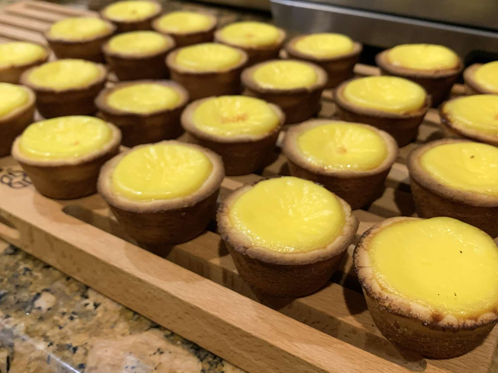

Hong Kong Style Egg Tart Recipe

Description
Very easy to make Chinese style Egg Tart, you can put the leftovers in the
refrigerator for later use for up to 3 days. You can reduce the sugar used
on the crust and the filling to fit your taste, this recipe is lightly
sweetened. If you want to you, can add more sugar to the filling.
Hope you enjoy it!
Ingredients
- 1 cup confectioners' sugar
- 3 cups all-purpose flour
- 1 cup butter
- 1 egg, beaten
- 1 dash vanilla extract
- ⅔ cup white sugar
- 1 ½ cups water
- 9 eggs, beaten
- 1 dash vanilla extract
- 1 cup evaporated milk
Steps
-
In a medium bowl, mix together the confectioners' sugar and flour. Mix
in butter with a fork until it is in small crumbs. Stir in the egg and
vanilla until the mixture forms a dough. The texture should be slightly
moist. Add more butter if it is too dry, or more flour, if the dough seems
greasy. Shape dough into 1 1/2 inch balls, and press the balls into tart
molds so that it covers the bottom, and goes up higher than the sides.
Use 2 fingers to shape the edge into an A shape.
-
Preheat the oven to 450 degrees F (230 degrees C). Combine the white sugar
and water in a medium saucepan, and bring to a boil. Cook until the sugar
is dissolved, remove from heat and cool to room temperature. Strain the
eggs through a sieve, and whisk into the sugar mixture. Stir in the evaporated
milk and vanilla. Strain the filling through a sieve, and fill the tart shells.
-
Bake for 15 to 20 minutes in the preheated oven, until golden brown, and the
filling is puffed up a little bit.